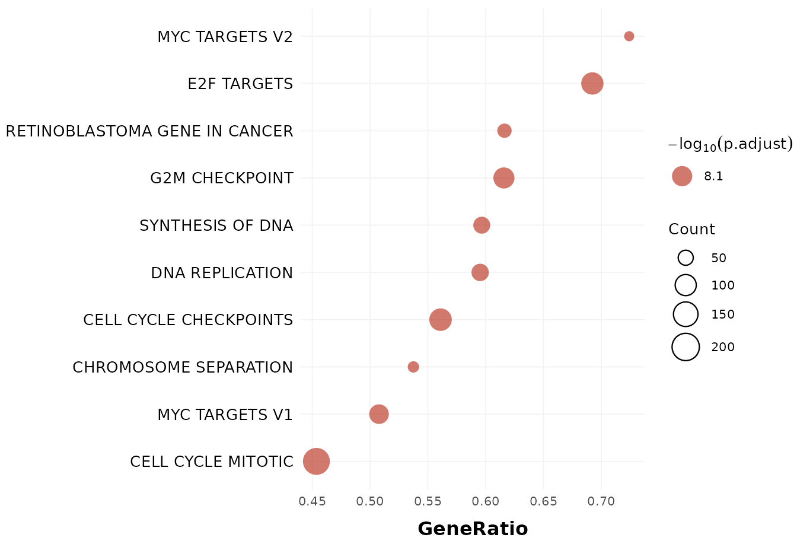

The dotPlot function generates a customizable dot plot
visualization for Gene Set Enrichment Analysis (GSEA) results stored in a
SummarizedExperiment object. The plot displays enriched pathways as
dots positioned by enrichment metrics (e.g., GeneRatio, Count,
or NES) and encoded by color, size, and transparency to represent
statistical significance and biological importance.
Usage
dotPlot(
seDataFgsea,
showCategory = 10,
breaklineN = 30,
x = "GeneRatio",
size = "Count",
alpha = "p.adjust",
orderBy = "GeneRatio",
decreasing = TRUE,
fontSize = 10,
title = NULL
)Arguments
- seDataFgsea
A
SummarizedExperimentobject containing GSEA results. The metadata must include agseaResultobject with pathway information, gene sets, enrichment statistics, and ranking metrics.- showCategory
Either a numeric value specifying the number of top enriched pathways to display, or a character vector specifying particular pathway IDs or names. Default is
10.- breaklineN
Integer. Maximum number of characters before inserting line breaks into pathway names for better readability. Default is
30.- x
Character. Variable to display on the x-axis. Must be one of
"GeneRatio","Count", or"NES". Default is"GeneRatio".- size
Character. Variable used to scale dot size. Must be one of
"Count"or"GeneRatio". Default is"Count".- alpha
Character. Statistical metric used for transparency encoding. Must be one of
"pvalue","p.adjust", or"qvalue". Default is"p.adjust".- orderBy
Character. Column name used to order pathways before plotting. Default is
"GeneRatio".- decreasing
Logical. Whether to sort pathways in decreasing order. Default is
TRUE.- fontSize
Numeric. Base font size for all plot text elements. Default is
10.- title
Character or
NULL. Custom plot title. IfNULL, no title is displayed. Default isNULL.
Value
A named list with two components:
dotPlotA
ggplot2object visualizing enriched pathways with customizable color, size, and transparency encodings.tableDotPlotA
data.framecontaining the plotted data, including columns:original_name: Original pathway IDsDescription: Formatted pathway names (with line breaks)NES: Normalized enrichment scoreCount: Number of core genes per pathwayGeneRatio: Ratio of core genes to set sizeStatistical significance column: The column specified by the
alphaparameter (pvalue,p.adjust, orqvalue)
Details
This function extends the visualization of enrichment results beyond the default enrichplot::dotplot() by supporting flexible mapping of dot color, size, and alpha transparency to different variables.
Dots represent enriched gene sets, where:
x-axis: Enrichment metric (e.g., GeneRatio, Count, NES)Dot size: Pathway size or gene ratioDot color: Enrichment direction (for NES) or fixed colorTransparency (alpha): Statistical significance
Pathways can be selected either by the number of top categories
(showCategory = 10) or explicitly by ID/name.
When x = "NES", the plot uses a diverging red–blue palette to
indicate up- and down-regulated enrichment directions.
Examples
data("sig2Fun_result")
dotPlot(seDataFgsea = sig2Fun_result)
#> $dotPlot

#>
#> $tableDotPlot
#> original_name
#> HALLMARK_MYC_TARGETS_V2 HALLMARK_MYC_TARGETS_V2
#> HALLMARK_E2F_TARGETS HALLMARK_E2F_TARGETS
#> WP_RETINOBLASTOMA_GENE_IN_CANCER WP_RETINOBLASTOMA_GENE_IN_CANCER
#> HALLMARK_G2M_CHECKPOINT HALLMARK_G2M_CHECKPOINT
#> REACTOME_SYNTHESIS_OF_DNA REACTOME_SYNTHESIS_OF_DNA
#> REACTOME_DNA_REPLICATION REACTOME_DNA_REPLICATION
#> REACTOME_CELL_CYCLE_CHECKPOINTS REACTOME_CELL_CYCLE_CHECKPOINTS
#> GOBP_CHROMOSOME_SEPARATION GOBP_CHROMOSOME_SEPARATION
#> HALLMARK_MYC_TARGETS_V1 HALLMARK_MYC_TARGETS_V1
#> REACTOME_CELL_CYCLE_MITOTIC REACTOME_CELL_CYCLE_MITOTIC
#> Description NES Count
#> HALLMARK_MYC_TARGETS_V2 MYC TARGETS V2 3.004013 42
#> HALLMARK_E2F_TARGETS E2F TARGETS 3.510738 135
#> WP_RETINOBLASTOMA_GENE_IN_CANCER RETINOBLASTOMA GENE IN CANCER 2.948152 53
#> HALLMARK_G2M_CHECKPOINT G2M CHECKPOINT 3.351032 117
#> REACTOME_SYNTHESIS_OF_DNA SYNTHESIS OF DNA 2.883716 71
#> REACTOME_DNA_REPLICATION DNA REPLICATION 2.925495 75
#> REACTOME_CELL_CYCLE_CHECKPOINTS CELL CYCLE CHECKPOINTS 2.944007 138
#> GOBP_CHROMOSOME_SEPARATION CHROMOSOME SEPARATION 2.922751 43
#> HALLMARK_MYC_TARGETS_V1 MYC TARGETS V1 3.046437 98
#> REACTOME_CELL_CYCLE_MITOTIC CELL CYCLE MITOTIC 2.991800 220
#> GeneRatio p.adjust
#> HALLMARK_MYC_TARGETS_V2 0.7241379 7.269352e-09
#> HALLMARK_E2F_TARGETS 0.6923077 7.269352e-09
#> WP_RETINOBLASTOMA_GENE_IN_CANCER 0.6162791 7.269352e-09
#> HALLMARK_G2M_CHECKPOINT 0.6157895 7.269352e-09
#> REACTOME_SYNTHESIS_OF_DNA 0.5966387 7.269352e-09
#> REACTOME_DNA_REPLICATION 0.5952381 7.269352e-09
#> REACTOME_CELL_CYCLE_CHECKPOINTS 0.5609756 7.269352e-09
#> GOBP_CHROMOSOME_SEPARATION 0.5375000 7.269352e-09
#> HALLMARK_MYC_TARGETS_V1 0.5077720 7.269352e-09
#> REACTOME_CELL_CYCLE_MITOTIC 0.4536082 7.269352e-09
#>